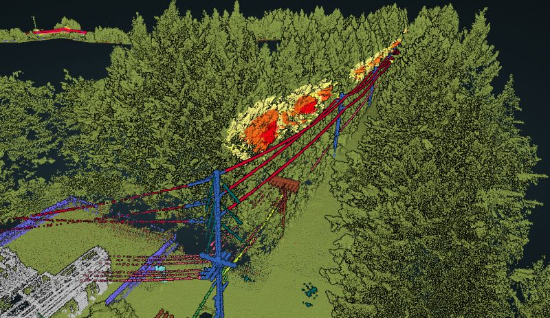

LAS/LAZ point clouds
Classified source data for technical review, filtering, and future processing.
LiDAR scanning is only useful if the files match the work. Outputs can be prepared for CAD, GIS, review, planning, quantities, and reporting.
Every project is different, but these are the files teams most often ask for when they need large-area topo or bare-earth terrain.
Classified source data for technical review, filtering, and future processing.
Ground surfaces built from classified returns where the terrain is the main product.
Contour outputs prepared from the terrain surface for planning and design review.
Surface and export files prepared for civil, CAD, and modelling workflows.
Aerial imagery when visual context helps explain the LiDAR data.
Earthworks, stockpile, and progress comparisons from measurable surfaces.
Control, checkpoints, and processing notes when the job needs documentation.
Clear notes describing what was collected, processed, and delivered.

Accuracy depends on the site, flight plan, control, checkpoints, sensor setup, processing, and deliverable type. A generic number is less useful than a workflow that fits the project.
Drone Services Canada Inc. can include ground control, checkpoints, and QA/QC documentation where the work requires it, so the output is aligned with how the data will be used.
The best quote starts with the end use. A boundary and a short deliverable list help determine the flight plan, control approach, processing effort, and file formats.
Surfaces, contours, and linework prepared for design-oriented workflows.
Point clouds, imagery, and terrain models for mapping and inspection contexts.
Earthworks and progress deliverables scoped to compare surfaces and quantities.
Send the site area and target outputs. We will help scope the collection and processing plan.